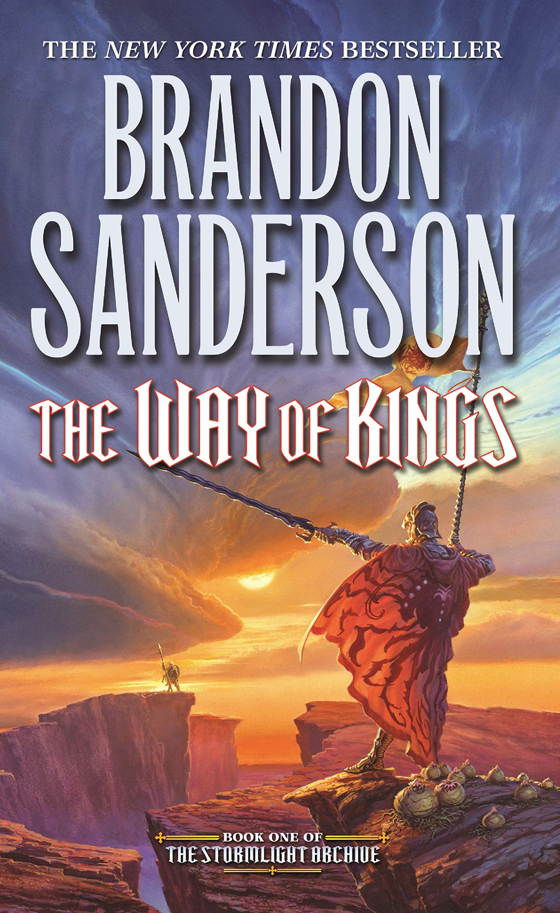
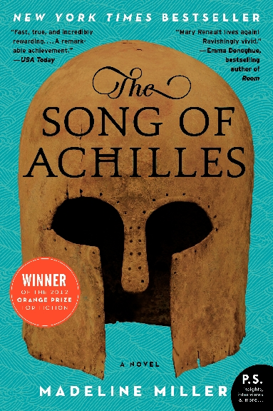
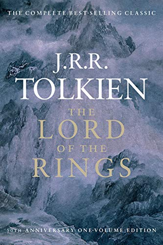

his story is an epic fantasy novel. It follows the view points of several characters,
including Dalinar Kholin, Highprince, whose brother was the king,
who was recently murdered. This series is very indepth ,
so best to read them back to back to better understand the plot going forward.

"The Song of Achilles" Madeline Miller
This is the story of Achilles as told by Patroclus, his ward,
and eventually Achilles's lover. See the incredible superhuman powers
of a half god, half human during the battle of Troy.

Best Sellers
"The Lord of the Rings" J.R.R. Tolkien
Some say the father of modern fantasy, JRR Tolken's Lord of the Rings,
is a fantasy that covers three books. The story is of a young Hobbit, who
must destroy the Ring of Shaurmon before Shaurmon can reclaim his powerful ring.

"Harry Potter" J.K. Rowling
Harry Potter is the telling of a boy who is sent to live with
his unlcle and aunt after his parents death. At the age of eleven
Harry discovers that his life will never be the same again. Harry discovers
he has magical powers, but more than that he is a wizard.